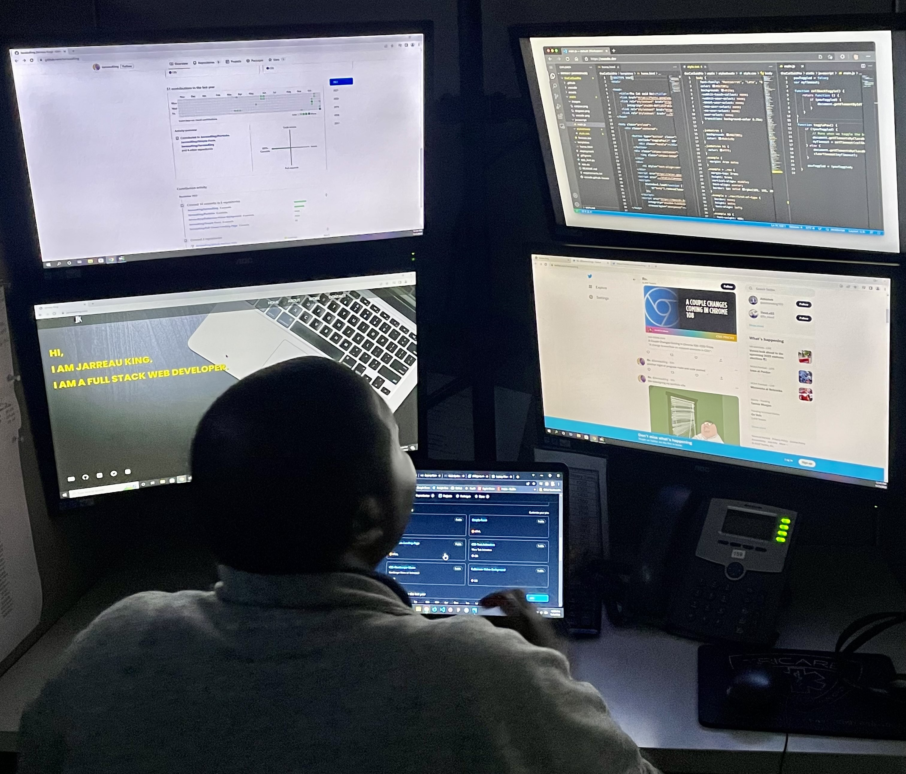

Jarreau King
- Software Engineer -
I am a full stack web developer based out of Atlantic City, NJ. I am a passionate developer with a focus on front-end web development. A natural leader and strong communicator, I help bridge the gap between the business and technology world. My main objective is to build amazing websites/products and solve problems for different industries and niches using the power of technology. I seek to develop new relationships in order to provide the best support possible for my clients, ensuring that every interaction brings forth a positive outcome. I am open to coffee chats(virtual or in-person) as well as employment opportunities...let's connect.
